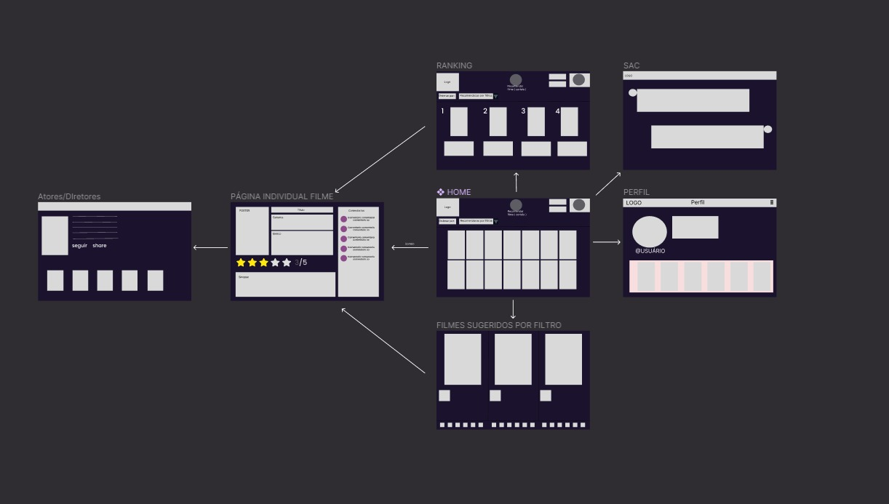

Introdução
Atualmente o acesso a filmes está cada vez mais simples, mas essa simplicidade e o grande leque de oções desenvolveram um novo problema que buscamos resolver com esse trabalho.
Informações Gerais
- Projeto: Dificuldade para encontrar filmes
- Repositório GitHub: Template Trabalho Interdisciplinar
- Membros da equipe:
Contexto
Detalhes sobre o espaço de problema, justificativas e os objetivos do projeto.
Problema
Atualmente o acesso a filmes está cada vez mais simples, mas essa simplicidade e o grande leque de opções desenvolveram um novo problema. Muitas pessoas perdem muito tempo procurando um filme para e até mesmo desistem antes mesmo de achar, porque cansou ou a comida já acabou, entre outro motivos. Uma pesquisa foi feita entre jovens e adultos em que foi informado que muitos deles gastam pelo menos 30 minutos para decidir qual filme assistir(por diversos motivos), esse é o problema que nosso time pretende resolver.
Objetivos
Nosso objetivo é recomendar um número limitado de filmes para o usuário, baseando-nos nas preferências e características pessoais. Com isso o intuito é reduzir o tempo gasto pelo usuário quando deseja ver um filme, mas não consegue se decidir em meio a tantas opções.
Justificativa
Foi feita uma pesquisa entre amigos e conhecidos em que muitos deles indicaram esse problema, e que conhecem pessoas que passam pelo mesmo. Com isso percebe-se que esse é um problema relativamente comum, muitas pessoas perdem muito tempo para decidir os filmes que desejam assistir. Seja por uma dificuldade de entrar em acordo com seu companheiro ou até mesmo não conseguir tomar uma decisão. Por isso, fizemos o projeto, para facilitar esse processo.
Público-alvo
Adultos e adolescentes que compartilham do gosto de ver filmes, mas tem problemas de decidir o que ver.
Concepção (Design Thinking)
Detalhes do processo de discovery do projeto.
Apresente o processo de discovery do projeto. Com foco na experiência do usuário, esse processo abrange a compreensão do contexto do problema e das características do usuário, a definição do problema, a geração de ideias, a prototipagem e a elaboração de uma proposta de solução
Processo de Design Thinking
O arquivo que se segue apresenta o resultado desse processo.
Apresente o processo de Design Thinking realizado pelo grupo e documentado por meio do software Miro. No documento apresentado, devem ser incluídos: (1) a matriz CSD, (2) o mapa de stakeholders, (3) as personas, (4) as respectivas propostas de valor e (5) o processo de ideação identificando as ideias levantadas e sua priorização.
Especificações do Projeto
Documentação das especificações do projeto.
Apresente as especificações do projeto, incluindo as histórias de usuário e os requisitos funcionais e não funcionais.
Histórias de Usuários
Com base na análise das personas foram identificadas as seguintes histórias de usuários:
Apresente aqui as histórias de usuário que são relevantes para o projeto de sua solução. As Histórias de Usuário consistem em uma ferramenta poderosa para a compreensão e elicitação dos requisitos funcionais e não funcionais da sua aplicação. Se possível, agrupe as histórias de usuário por contexto, para facilitar consultas recorrentes à essa parte do documento.
EU COMO...Estudante que sonha em se tornar uma roteirista |
QUERO/PRECISO...Assistir mais filmes, porém não perder muito tempo, ja que faço faculdade |
PARA...Ganhar experiência no meio cinematográfico |
|---|---|---|
| Usuário do sistema | Registrar meus gostos | O site rastrear filmes que me interessem |
| Administrador | Recomendar os filmes baseados no interesse | Poupar o tempo e não atrapalhar sua rotina |
História 2
EU COMO...Dono de um serviço de streaming |
QUERO/PRECISO...Expandir o alcance do meu serviço |
PARA...Manter o crescimento da minha empresa |
|---|---|---|
| Usuário do sistema | Fornecer o conteúdo apresentado no meu produto | O site adicionar à seu banco de dados |
| Administrador | Fornecer a informação de onde é possivel assitir o filme, com um link de direcionamento | Direcionar mais usuários ao produto do cliente. |
Hisótria 3
EU COMO...Casa recém casado |
QUERO/PRECISO...Concíliar os meus gostos com a da minha parceira |
PARA...Decidirmos o filme que veremos |
|---|---|---|
| Usuário do sistema | Combinrmos coisas que ambos gostamos | Acharmos um filme que agrade ambos |
| Administrador | Receber e combinar as características inseridas | Recomendar filmes que se encaixem e seja de bom gosto para ambos |
Requisitos
As tabelas que se seguem apresentam os requisitos funcionais e não funcionais que detalham o escopo do projeto.
Com base nas Histórias de Usuário, enumere os requisitos da sua solução. Classifique esses requisitos em dois grupos:
- Requisitos Funcionais (RF): correspondem a uma funcionalidade que deve estar presente na plataforma (ex: cadastro de usuário).
- Requisitos Não Funcionais (RNF): correspondem a uma característica técnica, seja de usabilidade, desempenho, confiabilidade, segurança ou outro (ex: suporte a dispositivos iOS e Android).
Lembre-se que cada requisito deve corresponder à uma e somente uma característica alvo da sua solução. Além disso, certifique-se de que todos os aspectos capturados nas Histórias de Usuário foram cobertos.
Requisitos Funcionais
| ID | Descrição do Requisito | Prioridade |
|---|---|---|
| RF-001 | Permitir que o usuário cadastre seus gostos e que possamos identfica-los | ALTA |
| RF-002 | Proporcionar um catalogo com informações sobre os filmes como: avaliações, elenco,duração, disponibilidade,etc. | ALTA |
| RF-003 | Apresentar um sistema de SAC para receber reclamações ou ideias de melhoria dos usuários | BAIXA |
| RF-004 | Fornecer um formato de interação entre os usuários, em que eles podem combinar o gosto de duas pessoas e recomendar filmes | MEDIA |
| RF-005 | Fornecer um sistema de avaliação do usuário para os filmes assistidos | MEDIA |
| RF-006 | Possibilitar o usuario de criar lista de filmes que deseja assitir | MEDIA |
Requisitos Não-Funcionais
| ID | Descrição do Requisito | Prioridade |
|---|---|---|
| RNF-001 | Entrgar os filmes recomendados em pelo menos 30s | ALTA |
| RNF-002 | Calcular uma nota de avaliação original baseado-se na media de outros portais | MÉDIA |
| RNF-003 | Apresentar filmes que ainda serão disponilizados ao público | MÉDIA |
| RNF-004 | Mostrar os filmes em alta no momento | MÉDIA |
Projeto de Interface
Artefatos relacionados com a interface e a interacão do usuário na proposta de solução.
Apresente a ideia de interface que está sendo prevista para o projeto. Inclua os wireframes, o user/screen flow e o protótipo interativo.
User/Screen Flow e Protótipo interativo
Artefatos relacionados com a interface e a interacão do usuário na solução proposta.
O fluxo de usuário (User Flow) é uma técnica que permite ao desenvolvedor mapear todo fluxo de telas do site ou app. Essa técnica funciona para alinhar os caminhos e as possíveis ações que o usuário pode fazer junto com os membros de sua equipe. 
Um protótipo interativo apresenta o projeto de interfaces e permite ao usuário navegar pelas funcionalidades como se estivesse lidando com o software pronto. Veja o exemplo a seguir.

Wireframes
Protótipo de telas do sistema em baixa fidelidade (rascunhos).
Os Wireframes são protótipos das telas da aplicação usados em design de interface para sugerir a estrutura de um site web e seu relacionamentos entre suas páginas. Um wireframe web é uma ilustração semelhante ao layout de elementos fundamentais na interface. 
Os wireframes são apresentados da seguinte forma:
- Inserir gostos pessoais
- Catálogo de Filmes
- Pagina de Perfil
- Pagina individual do ator/equipe
- Minha Lista
- HOME Page
- Pagina individual do filme
- Pagina dos Filmes sugeridos
- Pagina da seleção completamente aleatótia
- Ranking dos filmes no site
Metodologia
Detalhes sobre a organização do grupo e o ferramental empregado.
Nesta parte do documento, você deve apresentar a metodologia adotada pelo grupo, descrevendo o processo de trabalho baseado nas metodologias ágeis, a divisão de papéis e tarefas, as ferramentas empregadas e como foi realizada agestão de configuração do projeto via GitHub.
Coloque detalhes sobre o processo de Design Thinking e a implementação do Framework Scrum seguido pelo grupo. O grupo poderá fazer uso de ferramentas on-line para acompanhar o andamento do projeto, a execução das tarefas e o status de desenvolvimento da solução.
Ferramentas
Relação de ferramentas empregadas pelo grupo durante o projeto.
Liste as ferramentas empregadas no desenvolvimento do projeto, justificando a escolha delas, sempre que possível. Inclua itens como: (1) Editor de código, ferramentas de comunicação, ferramentas de diagramação, plataformas de hospedagem, entre outras.
| Ambiente | Plataforma | Link de Acesso |
|---|---|---|
| Processo de Design Thinking | Miro | https://miro.com/app/board/uXjVMoA9Jqo=/?share_link_id=91568262008 |
| Repositório de código | GitHub | https://github.com/ICEI-PUC-Minas-PPLCC-TI/ti-1-ppl-cc-m-20232-dificuldade-de-encontrar-filmes |
| Hospedagem do site | Heroku | https://XXXXXXX.herokuapp.comEXEMPLO |
| Protótipo Interativo | MavelApp ou Figma | https://marvelapp.com/prototype/10199a40 |
Gestão do Projeto
Divisão de papéis no grupo e apresentação da estrutura da ferramenta de controle de tarefas (Kanban).
Apresente a divisão de papéis e tarefas entre os membros do grupo. Informe quem é o Scrum Master, o Product Owner e os desenvolvedores. Informe também quem é o responsável pela documentação do projeto.
Apresente o quadro de gerenciamento do time (Kanban), seu formato e as experiências na utilização dessa ferramenta (GitHub Projects)
Sistema KANBAN: https://trello.com/invite/b/peaPnun8/ATTI966701a27b5f77f1f29305f60a3aba513E899AF5/kanban
Controle de Versão
Estrutura do fluxo de trabalho no ambiente do GitHub.
Discuta como a configuração do projeto foi feita na ferramenta de versionamento (GitHub). Exponha como a gerência de tags, merges, commits e branchs é realizada. Discuta como a gerência de issues foi realizada.

Cada mebro do grupo fez as tarefas que lhe foram designadas, e após correção de erros e possíveis bugs foi feita a junção. Na junção foi tomado o devido cuidado com as funções, constantes e variáveis utilizadas, para que elas não se anulem.
Solução
Esta seção apresenta todos os detalhes da solução criada no projeto.
Apresente cada uma das funcionalidades que a aplicação fornece tanto para os usuários quanto aos administradores da solução.
Inclua, para cada funcionalidade, itens como: (1) titulos e descrição da funcionalidade; (2) Estrutura de dados associada; (3) o detalhe sobre as instruções de acesso e uso.
Video do Projeto
O vídeo a seguir traz uma apresentação do problema que a equipe está tratando e a proposta de solução.
O video de apresentação é voltado para que o público externo possa conhecer a solução. O formato é livre, sendo importante que seja apresentado o problema e a solução numa linguagem descomplicada e direta.
Utilize o recurso de compartilhamento via embed e inclua o vídeo logo abaixo.
...... COLOQUE AQUI O SEU VIDEO ......
Funcionalidades
Esta seção apresenta as funcionalidades da solução.
Apresente cada uma das funcionalidades que a aplicação fornece tanto para os usuários quanto aos administradores da solução.
Inclua, para cada funcionalidade, itens como: (1) titulos e descrição da funcionalidade; (2) Estrutura de dados associada; (3) o detalhe sobre as instruções de acesso e uso.
Funcionalidade 1 - Cadastro de Filtros
Permite a inclusão de filtros específicos desejados pelo usuario
- Estrutura de dados: Filtros
- Instruções de acesso:
- Abra o site e clique na estrela central
- Escolha entre as opões de filtro apresentadas
Funcionalidade 2 - Recomendação de Filmes
Baseando-se nos filtros escolhidos o site recomenda 3 filmes ao usuário
- Estrutura de dados: Filmes recomendados
- Instruções de acesso:
- Escolhas os filtros desejados
- Clique na opção: escolha filme
- Em seguida, escolha entre as opções apresentadas
Funcionalidade 3 - Catálogo
Catálogo Geral que informa todos os filmes no banco de dados do site.
- Estrutura de dados: Catalogo
- Instruções de acesso:
- Abra o site
- Veja o catalogo
- Role o site e mude as paginas para ver os varios filmes
Funcionalidade 4- Pagina com informações especficas de filmes e atores
Ao clicar em um poster, o usuario será direcionado para uma pagina com informações esecíficas dos filmes. E ao pesquisar nomes de atores será direcionado para pagina com informações específicas do mesmo.
- Estrutura de dados: Informações específicas
- Instruções de acesso:
- Clique em algum filme/ator específico
- Uma pagina será aberta com as informações especificas do filme/ator escolhido
Funcionalidade 5- Avaliações
Possibilidade de avaliar filmes vistos
- Estrutura de dados: Avaliações
- Instruções de acesso:
- Abra a pagina especifica de um filme
- Clique no numero de estrelas
- Adicione um comentario
- envie!
Funcionalidade 6- Lista "Quero ver"
Possibilita o usuario a criar uma lista de filmes que deseja ver no futuro
- Estrutura de dados: "Quero Ver"
- Instruções de acesso:
- Abra a pagina individual do filme
- Clique no botão para adiciona-lo à lista
Funcionalidade 7- Pagina de Futuros Lançamentos
Permite a visualização de filme a serem lançados nas diversas plataformas(Cinema,Netflix,etc.)
- Estrutura de dados: Futuros lançamentos
- Instruções de acesso:
- Abra o site
- Acesse a opção: Futuros Lançamentos
- Veja os filmes que ainda não foram lançados.
Funcionalidade 8- Match de FIlmes
- Estrutura de dados: Match
- Instruções de acesso:
- Abra o site
- Acesse a opção para o "Match"
- Escolha os filmes que gostam
- Vejam os Filmes relacionados aos escolhidos, que também pode te agradar
Funcionalidade 9- Filmes em alta
- Estrutura de dados: Filmes em Alta
- Instruções de acesso:
- Abra o site
- Acesse a opção em alta
- Veja os Filmes com alto indicde de atividade entre usuarios

Estruturas de Dados
Descrição das estruturas de dados utilizadas na solução com exemplos no formato JSON.
Apresente as estruturas de dados utilizadas na solução tanto para dados utilizados na essência da aplicação quanto outras estruturas que foram criadas para algum tipo de configuração
Nomeie a estrutura, coloque uma descrição sucinta e apresente um exemplo em formato JSON.
Estrutura de Dados - Pagina Indiviual(Filmes)
Informações individuais dos Filmes
{
"adult": false,
"backdrop_path": "/mDfJG3LC3Dqb67AZ52x3Z0jU0uB.jpg",
"id": 299536,
"title": "Vingadores: Guerra Infinita",
"original_language": "en",
"original_title": "Avengers: Infinity War",
"overview": "Homem de Ferro, Thor, Hulk e os Vingadores se unem para combater seu inimigo mais poderoso, o maligno Thanos. Em uma missão para coletar todas as seis pedras infinitas, Thanos planeja usá-las para infligir sua vontade maléfica sobre a realidade.",
"poster_path": "/rkHe0BfOo1f5N2q6rxgdYac7Zf6.jpg",
"media_type": "movie",
"genre_ids": [
12,
28,
878
],
"popularity": 241.254,
"release_date": "2018-04-25",
"video": false,
"vote_average": 8.3,
"vote_count": 28031
}
Estrutura de Dados - Paginas Individuais(atores)
Informações especificas dos atores
{
"adult": false,
"also_known_as": [
"Энн Хэтэуэй",
"Anne Whitney Hathaway",
"앤 해서웨이",
"Anne Jacqueline Hathaway",
"Αν Χάθαγουεϊ",
"安妮·海瑟薇",
"Енн Гетевей",
"安·海瑟薇",
"Αν Γουίτνεϊ Χάθαγουεϊ",
"آن هاتاوی",
"アン・ハサウェイ"
],
"biography": "Anne Jacqueline Hathaway (born November 12, 1982) is an American actress. She is the recipient of various accolades, including an Academy Award, a Golden Globe Award, and a Primetime Emmy Award, and was among the world's highest-paid actresses in 2015. Her films have grossed over $6.8 billion worldwide, and she appeared on the Forbes Celebrity 100 list in 2009.\n\nHathaway graduated from Millburn High School in New Jersey, where she performed in several plays. As a teenager, she was cast in the television series Get Real (1999–2000) and made her breakthrough as the protagonist in her debut film, the Disney comedy The Princess Diaries (2001). Hathaway made a transition to adult roles with the 2005 dramas Havoc and Brokeback Mountain. The comedy-drama The Devil Wears Prada (2006), in which she played an assistant to a fashion magazine editor, was her biggest commercial success to that point. She played a recovering addict with a mental illness in the drama Rachel Getting Married (2008), which earned her a nomination for the Academy Award for Best Actress. Hathaway went on to star in several commercially successful films, including the comedy Get Smart (2008), the romances Bride Wars (2009), Valentine's Day (2010), and Love & Other Drugs (2010), and the fantasy film Alice in Wonderland (2010). In 2012, she starred as Selina Kyle / Catwoman in her highest-grossing film, The Dark Knight Rises. Also that year, she played Fantine, a prostitute dying of tuberculosis, in the musical Les Misérables, for which she won the Academy Award for Best Supporting Actress. She has since played a scientist in the science fiction film Interstellar (2014), the owner of an online fashion site in the comedy The Intern (2015), a haughty actress in the heist film Ocean's 8 (2018), a con artist in the comedy The Hustle (2019), and Rebekah Neumann in the miniseries WeCrashed (2022).\n\nIn addition to film roles, Hathaway has won a Primetime Emmy Award for her voice role in the sitcom The Simpsons, sung for soundtracks, appeared on stage, and hosted events.",
"birthday": "1982-11-12",
"deathday": null,
"gender": 1,
"homepage": null,
"id": 1813,
"imdb_id": "nm0004266",
"known_for_department": "Acting",
"name": "Anne Hathaway",
"place_of_birth": "Brooklyn, New York, USA",
"popularity": 97.414,
"profile_path": "/tLelKoPNiyJCSEtQTz1FGv4TLGc.jpg"
}
Estrutura de Dados - Minha Lista(Quero assistir)
Informações dos Filmes que serão adicionados a sua lista
const listaDeFilmes = [
{
titulo: "A Pequena Sereia",
descricao: "Uma jovem sereia faz um acordo com uma bruxa do mar para trocar sua bela voz por pernas humanas para que possa descobrir o mundo acima da água e impressionar um príncipe.",
genero: "Infantil",
imagem_url: "filme9.jpg",
naMinhaLista: true
},
Estrutura de Dados - Filmes a serem lançados
Informações de Filmes que ainda serão disponilizados
{
"adult": false,
"backdrop_path": "/bckxSN9ueOgm0gJpVJmPQrecWul.jpg",
"genre_ids": [
28,
12,
14
],
"id": 572802,
"original_language": "en",
"original_title": "Aquaman and the Lost Kingdom",
"overview": "Quando um poder antigo é liberado, Aquaman deve forjar uma aliança inquieta com um aliado improvável para proteger Atlântida, e o mundo, de uma devastação irreversível.",
"popularity": 223.067,
"poster_path": "/wCU7KFB8RrOwvwdVopRTirxiELd.jpg",
"release_date": "2023-12-20",
"title": "Aquaman 2: O Reino Perdido",
"video": false,
"vote_average": 0,
"vote_count": 0
},
Estrutura de Dados - Filmes em alta
Informações de Filmes com atividade alta entre usuarios
{
"adult": false,
"backdrop_path": "/9PqD3wSIjntyJDBzMNuxuKHwpUD.jpg",
"genre_ids": [
16,
35,
10751
],
"id": 1075794,
"original_language": "en",
"original_title": "Leo",
"overview": "Adam Sandler interpreta um lagarto chamado Leo na versão em inglês desta comédia que narra o último ano do fundamental pelos olhos do bichinho de estimação da sala.",
"popularity": 1914.015,
"poster_path": "/pD6sL4vntUOXHmuvJPPZAgvyfd9.jpg",
"release_date": "2023-11-21",
"title": "Leo",
"video": false,
"vote_average": 7.565,
"vote_count": 361
},
Estrutura de Dados - Avaliações
Dê notas e faça comentario sobre os filmes vistos
{
"id": 1,
"rating": "5",
"comment": "Muito bom o filme!"
},
Módulos e APIs
Esta seção apresenta os módulos e APIs utilizados na solução.
Apresente os módulos e APIs utilizados no desenvolvimento da solução. Inclua itens como: (1) Frameworks, bibliotecas, módulos, etc. utilizados no desenvolvimento da solução; (2) APIs utilizadas para acesso a dados, serviços, etc.
Informações sobre os filmes:
FAQ
Perguntas e respostas comuns associadas ao projeto.
Apresente uma lista de perguntas e respostas comuns associadas ao projeto. Inclua perguntas como: (1) detalhes de acesso e uso do projeto; (2) informações sobre a instalação e configuração da aplicação; (3) questões sobre a manutenção da aplicação; (4) detalhes sobre a integração da aplicação com outros sistemas; (5) questões sobre a segurança da aplicação.
Referências Bibliográficas
Esta seção apresenta as referências bibliográficas utilizadas no projeto.
Apresente as referências bibliográficas utilizadas no projeto. Inclua itens como: (1) livros, artigos, tutoriais, etc. utilizados no desenvolvimento da solução; (2) links para sites, blogs, etc. utilizados no desenvolvimento da solução.
https://developer.themoviedb.org/docs
https://youtu.be/qIGYM4S8x50?si=b7vgGl3JRKJOhtRW
https://youtu.be/we5Ac8U21lI?si=y_4i45n_NnFanMMU